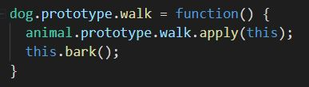
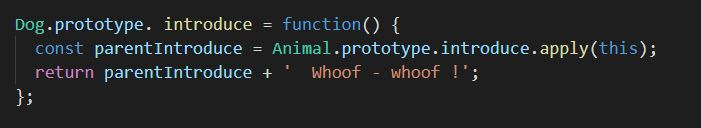

Inheritance in JavaScript
by Victoria Likhuta
Types of inheritance
Class-based programming (classical inheritance)
- Java
- C++
Prototype-based programming (prototypal inheritance)
- JavaScript
- Maple
Prototype chains


Inheritance by using __proto__


Pros and cons of using __proto__
| Pro | Con |
|
|
Inheritance by using Object.setPrototypeOf()

Pros and cons of using Object.setPrototypeOf()
| Pro | Con |
|
|
Inheritance by using prototype property and constructor function

Pros and cons of using prototype property and constructor function
| Pro | Con |
|
|
Inheritance by using Object.create()

Pros and cons of using Object.create()
| Pro | Con |
|
|
Cloning with Object.create()

Overriding parent methods
Changing parent methods
Inheritance by using Class-notation
Overriding and changing methods with Class-notation
Pros and cons of using classes
| Pro | Con |
|
|
Thank you!